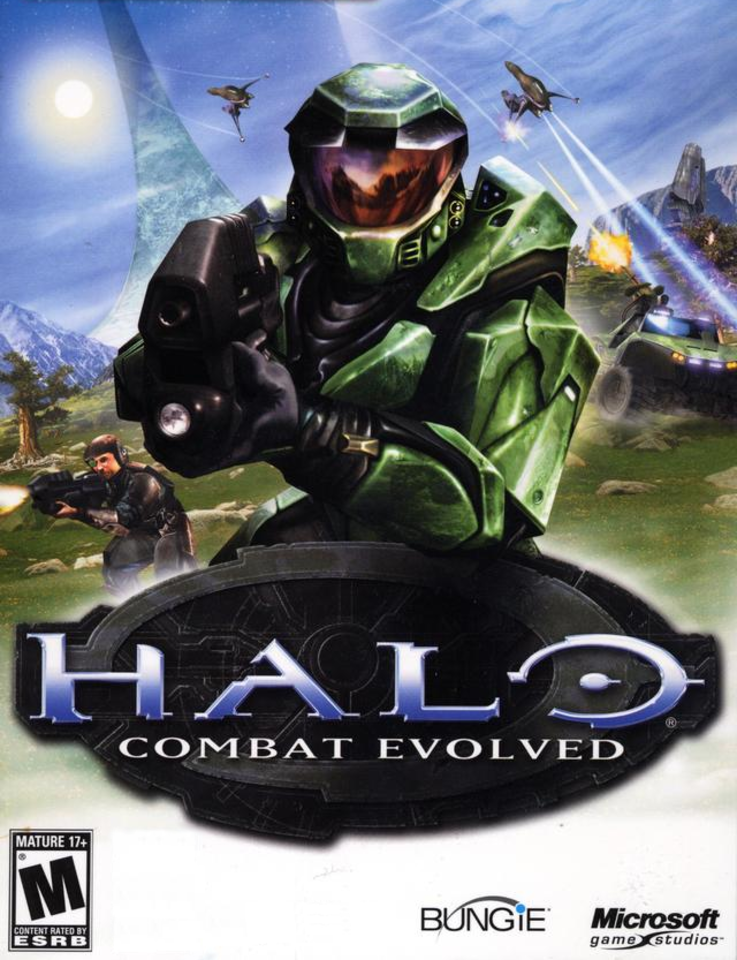
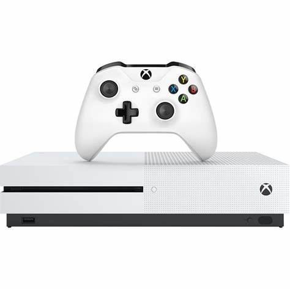

XBOX
O Xbox é um console de videogame desenvolvido pela Microsoft, lançado em 2001.
A ideia surgiu da vontade da empresa de entrar no mercado de games, competindo com consoles como
PlayStation e Nintendo.
O primeiro Xbox trouxe inovações, como o jogo "Halo: Combat Evolved", que se tornou um sucesso e ajudou a
definir a plataforma.


Em 2005, a Microsoft lançou o Xbox 360, que se destacou por seu design e pela inclusão de recursos online
através do Xbox Live, permitindo jogos multiplayer e download de conteúdo.
O Xbox One, lançado em 2013, ampliou as funcionalidades, integrando entretenimento e mídia, embora tenha
enfrentado críticas iniciais sobre políticas de uso.


A geração mais recente, o Xbox Series X e Series S, lançada em 2020, foca em gráficos avançados e
desempenho, consolidando a presença da Microsoft no mundo dos jogos.
Ao longo dos anos, o Xbox se tornou um dos principais nomes da indústria, com uma base de fãs leal e uma
vasta biblioteca de jogos.